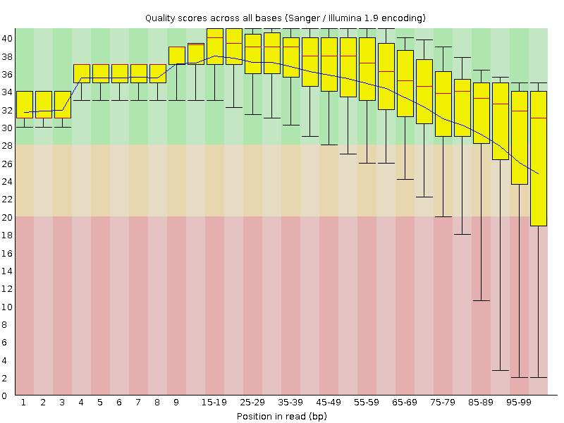
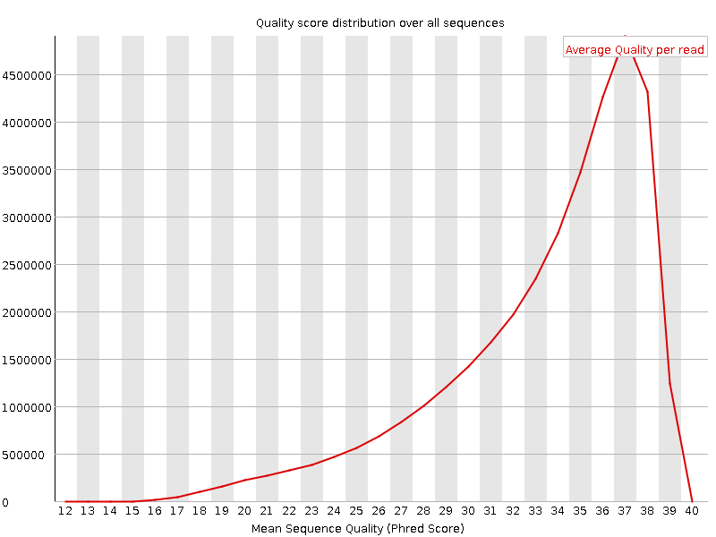
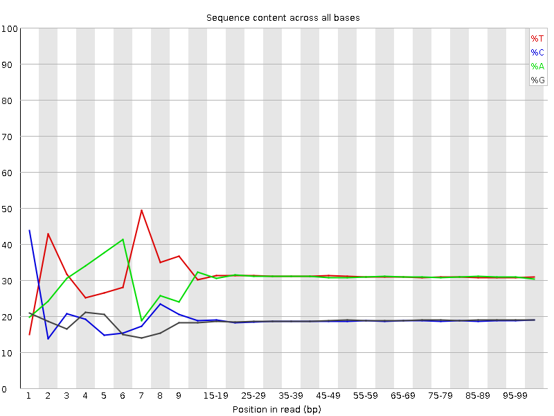
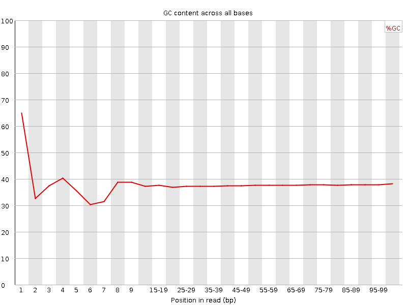
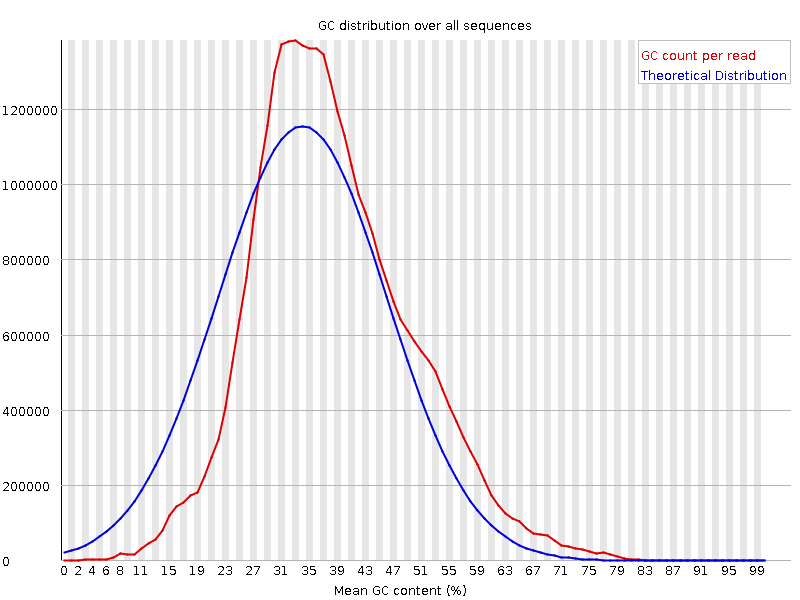
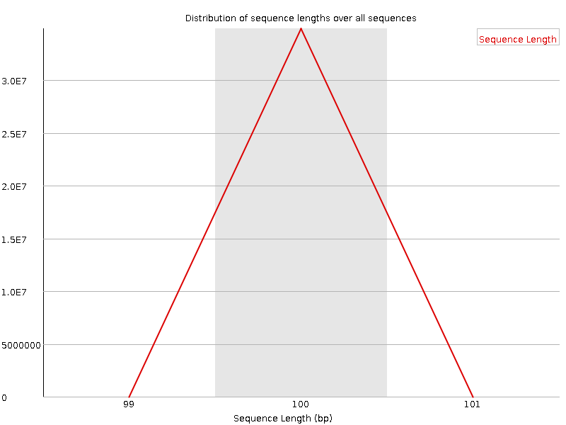
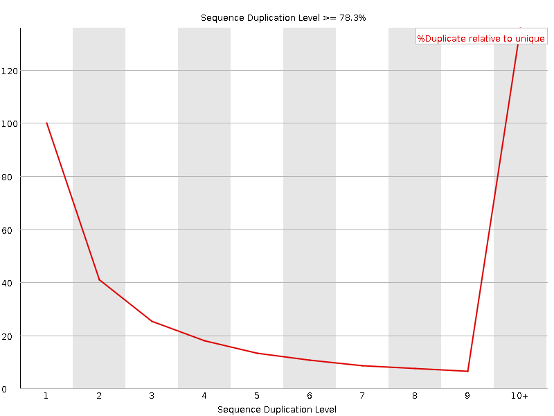
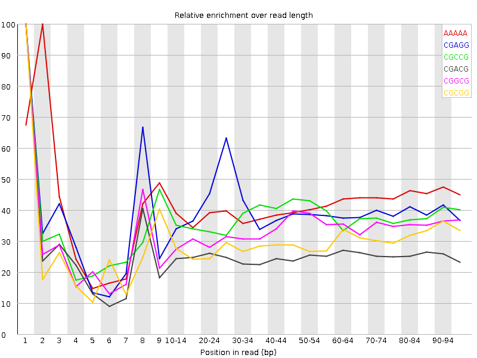

![[OK]](Icons/tick.png) Basic Statistics
Basic Statistics
| Measure | Value |
|---|---|
| Filename | t6_1.fq |
| File type | Conventional base calls |
| Encoding | Sanger / Illumina 1.9 |
| Total Sequences | 34883306 |
| Filtered Sequences | 0 |
| Sequence length | 100 |
| %GC | 37 |
Per base sequence quality

Per sequence quality scores

![[FAIL]](Icons/error.png) Per base sequence content
Per base sequence content

Per base GC content

![[WARN]](Icons/warning.png) Per sequence GC content
Per sequence GC content

Per base N content

Sequence Length Distribution

Sequence Duplication Levels

Overrepresented sequences
| Sequence | Count | Percentage | Possible Source |
|---|---|---|---|
| CTAATTTTCATCTTAATTCAACATCGAGGTCGCAAACATCTTTATCTATA | 72861 | 0.20887068444716794 | No Hit |
| CTTTCGTACAATTAATTAATATTTTATTATAGATAGAAACCAATCTGACT | 61442 | 0.17613582841030032 | No Hit |
Kmer Content

| Sequence | Count | Obs/Exp Overall | Obs/Exp Max | Max Obs/Exp Position |
|---|---|---|---|---|
| AAAAA | 21761585 | 2.2894862 | 5.5326204 | 2 |
| CGAGG | 2756020 | 2.0998907 | 5.253612 | 1 |
| CGCCG | 1710670 | 2.0963027 | 5.563378 | 1 |
| CGACG | 2620160 | 1.9739299 | 7.723451 | 1 |
| CGGCG | 1522230 | 1.886594 | 5.5945034 | 1 |
| CGCGG | 1438135 | 1.78237 | 6.0170217 | 1 |
| TCGAG | 3782740 | 1.7368089 | 5.031165 | 7 |
| CTCGA | 3713580 | 1.6858846 | 8.433796 | 1 |
| CTGGA | 3572305 | 1.6401898 | 7.2666664 | 1 |
| CGCGA | 2112560 | 1.5915232 | 5.9502153 | 1 |
| CGAGA | 3394095 | 1.5719692 | 5.3939953 | 1 |
| CTCCA | 3440040 | 1.5441451 | 6.516857 | 1 |
| CCGGC | 1254360 | 1.5371275 | 5.593974 | 1 |
| CGATC | 3353000 | 1.5221891 | 5.0373373 | 4 |
| ATCGA | 5375710 | 1.500331 | 5.224989 | 6 |
| CAAAA | 8759090 | 1.4989611 | 5.0472136 | 1 |
| CTTTT | 9063930 | 1.4981319 | 6.2854586 | 1 |
| CGCCA | 1987915 | 1.4807824 | 5.2362914 | 1 |
| CTGGC | 1941755 | 1.4501865 | 5.3665524 | 1 |
| CTTTC | 5317965 | 1.4422393 | 6.5566287 | 1 |
| CTCGT | 3182325 | 1.4322048 | 7.3903203 | 1 |
| CTTCG | 3177990 | 1.4302539 | 5.9441957 | 1 |
| CGAAG | 3075555 | 1.424438 | 5.1313567 | 1 |
| CTTCA | 5085735 | 1.3912975 | 5.2565413 | 1 |
| CTCGG | 1851365 | 1.3826792 | 7.7796187 | 1 |
| CTCGC | 1864115 | 1.3765489 | 6.2756243 | 1 |
| CTTGG | 2711505 | 1.2341884 | 5.854864 | 1 |
| CGAAA | 4368195 | 1.2297809 | 5.260696 | 1 |
| CTTTG | 4411535 | 1.2100185 | 5.560843 | 1 |
| GAATC | 4234155 | 1.1817293 | 5.0855513 | 4 |
| CTTGA | 4178330 | 1.1560576 | 5.2352734 | 1 |